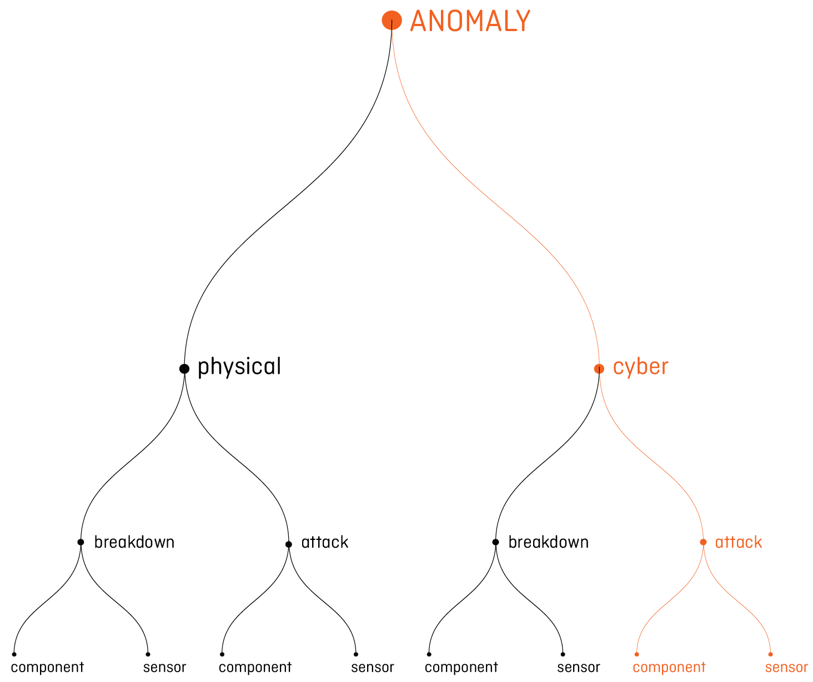
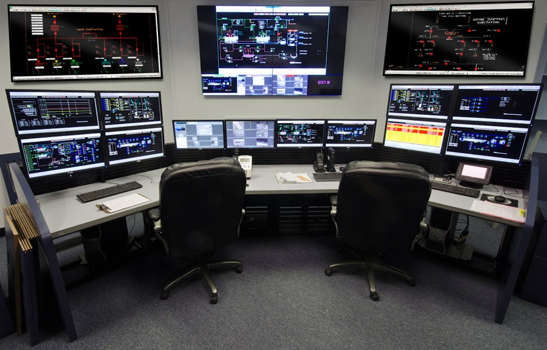

Every aspect of our daily life is going to be permeated by the Artificial Intelligence. The technology evolution allows a data collection the amount and complexity of required an artificial intelligence able to work at a non-human scale to support human tasks. Because these systems still need the human interpretation, their translation into a human-scale knowledge is fundamental.
Design is charged to integrate the machine system with the human thinking, opening new access to knowledge.
Design is charged to integrate the machine system with the human thinking, opening new access to knowledge.
Project Area
Water distribution systems are undergoing a process of intensive digitalization, adopting network devices (smart sensors, industrial computers, telemetry units) for monitoring and control. While this transition improves efficiency and reliability, these infrastructures are increasingly exposed to cyber-attacks. Cyber-attacks engender anomalous system behaviours which can be detected by data-driven algorithms monitoring sensors readings to disclose the presence of potential threats [paper tesi].
Cyber-attacks are usually perpetrated to sabotage the function of the system, causing damages or compromising the water quality. The attacks can be also focused on data spying, with the intention to steal information or organize future alterations. These kinds of attacks could be executed on government or private structure, both effecting public security. The Institutions tend to avoid communicating the events to protect data and details of the reported cases, but some response dedicated teams have been created to prevent and limit the consequences.
Cyber-attacks are usually perpetrated to sabotage the function of the system, causing damages or compromising the water quality. The attacks can be also focused on data spying, with the intention to steal information or organize future alterations. These kinds of attacks could be executed on government or private structure, both effecting public security. The Institutions tend to avoid communicating the events to protect data and details of the reported cases, but some response dedicated teams have been created to prevent and limit the consequences.
Kinds of Anomalies
Different kinds of anomalies can occur to the system, depending on the components involved and the action perpetrated to provoke them. The process of monitoring is composed by two levels: the first one focuses on the water quality, while the second one monitors the quantity. The project is focused on the quantity level, which looks at the data coming from the sensors of the network components. The irregularities registered on this data could damage the physical components or the informatics devices. In both cases, the irregularities could accidentally happen, for a breakdown, or could be done on purpose, in case of attack. The algorithm of the project specifically works detecting the anomalies caused by the attacks perpetrated on components and sensors, recognizing their specific behaviour.

Water Network Distribution System
The Water Supply System is composed by the pipes and the devices distributed in the urban territory and able to bring the water supply to private and public systems. The components will be considered during the project are the following: - storage tanks, where the water is harvested; - pumps, which allow the water transfer from one district to another; - valves, which regulate the water flow. They could be open or close, influencing the water quantity and the pressure employ; - junctions, where pumps and valves are connected; - reservoirs, the place where the major water is stored. Sensor devices are assembled on each of these elements to allow the data gathering. To transmit and manage these information other components are needed: - PLC (Programmable Logistic Controller), a communication device allowing data transmission from sensor to SCADA; - SCADA (Supervisory Control and Data Acquisition System), the Central System which gathers and makes all the data accessible to analysts; - RTU (Remote Terminal Unit) an electronical device which controls the component function; For every network component, a sensor transmits the data to the Central System (SCADA), where analysts can monitor the system status.
Kinds of Attacks
The kind of attack is defined by the feature of the components involved. In the study “Characterizing Cyber-Physical Attacks on Water Distribution System” (rif paper) they are thoroughly presented. Here a sum of the typologies is listed: 1) physical attack to a component: in order to perform this attack, the attacker is supposed to have direct physical access to the component or the sensor which can be damaged, manipulated or replaced. As consequence, the PLC connected may receive data compromised or stop receiving data. 2) physical attack to the link: a wireless or hardwire connection links a component with a sensor and a PLC with an actuator. The type of connection determines whether the attacker needs physical access to the sensor. Service could be interrupted, the data sent to the PLC could be manipulated or eavesdropped to get information on the system state. The connection interruptions could also be remotely perpetrated. The attacker can control signals and deceits the actuator. This attack could be anticipated by an eavesdropping attack, to gather information about the normal operations and usual behaviour of each component. 3) attack to the connection between two components: When the connection between two PLC or between the PLC and the SCADA system is intercepted a disruption of normal pumping operations is caused. Contents are manipulated and the communication could be eavesdropped. The way these components transmit data is corrupted and could happen that the data coming from a sensor contradict other parameters. 4) direct attack to the monitoring system: This attack allows the adversary to take the direct control of a PLC, stopping the normal operations of the controlled process or manipulating the control logic. The way to obtain the control affects the attacker possibility to intervene. This attack makes possible to the adversary to assume the control until the irregularities are detected and resorted. It is usually related to other attacks previously described, which are usually characterized by an intermittent behaviour that requires a constant interaction by the attackers. The attack to the SCADA system is not considered in the study because, if the SCADA has been compromised, the anomalies could not be detected: the system configuration is changed by the attacker controlling all the operations.
User: The Analyst
The analyst who controls and monitors the data and guide the operation in case of anomalies has been identified as user of the sonification we designed. He is a technician involved in the network supervision. He has usually studied process, chemical or mechanical engineering, sometimes he is a civil engineer with a lot of years of experience. He has not the mathematical competence to understand the algorithm. He spends his day analysing data coming from the sensor, comparing them with the data of the previous days, looking for patterns and anomalous behaviours.
Analysts work from the operation room where there are usually 10 monitors to show different information coming from the system. The work shifts usually involve two workers per time (where the system monitored has the medium-large dimension, like the one we worked on).

Analysts work from the operation room where there are usually 10 monitors to show different information coming from the system. The work shifts usually involve two workers per time (where the system monitored has the medium-large dimension, like the one we worked on).
What happen in case of Anomaly
The current anomaly detection system does not distinguish between anomalies caused by disruption and anomalies caused by attacks. The interface is composed by a general map where the network elements are not necessary disposed in a geographic order and by different visualizations the analysts can choose to control the status of a specific component in a specific time range. The symbol representing the component changes its colour when interested by an anomaly; a pop-up message appears on the screen to call the attention of the operator, who can open different windows selecting the part he is interested in. He is in the habit to compare the parameter with the value of the component related to the one which is not working well and, he also checks the value evolution during the time, trying to understand the problem causing the anomaly. Confident in his experience, he expresses a hypothesis and asks the technician to solve the problem operating on place.
Problems Identified
The analysis of the current situation reveals the main problems the identification of drove the role of the sound during the project.
The first problem we identified concerns the amount of data. Network is composed by a lot of different components frequently transmitting data and producing a large amount of information human cannot monitor. A whole information control is not allowed by the visual interface currently used. The density coming from the visual representation of the entire parameters prevents the analysis necessary to identify the problems.
Data amount, added to the other tasks absorbing the analyst routine, produces a visual overloaded, which is the second problem identified. During a work day, analysts absolve different tasks beyond the data monitoring. For this reason, their visual attention is not uniquely focused on the monitor interface and they could let some details or trend escape. The repetitiveness of their routine does not help to keep the attention high, which is very important to glimpse the initial feature of an attack. The “alarm fatigue" reduces the detected alarms and an increase the number of missed alarms. This phenomenon could extend the time needed by the analyst to realize the presence of the problem and the time required to solve it.
The third problem concerns the false alarms which are reported by the system but which indicate a problem that is actually not occurring or that is not as serious as it appears. This happens because the current system is based on a binary answer considering only the normal or the anomalous status without the in-between levels. Until now, no distinction of the level of the anomaly has been done and insignificant problems are reported like the most dangerous ones. These “false positive” alarms contribute to reduce the system credibility, causing the monitoring system switching off by the users, because of the continuous interruptions. Analysts cannot personally judge the level of seriousness of what is happening. At the moment, the only way they have to deepen the problem is carefully reading the visualizations on monitors, stopping the other work they are doing.
The last problem we identified is provoked by the “replay attacks” and happens when criminals fathom the system and transmit to the central computer data registered some days before (usually two or three). This intrusion is committed to spy on the system function to hide different attacks. Analysts can recognize the data is not authentic only few days later, when a comparison between information coming from different components and time is achieved. For this reason, patterns recognition could help the operators to understand whether the data is reliable or not.
The first problem we identified concerns the amount of data. Network is composed by a lot of different components frequently transmitting data and producing a large amount of information human cannot monitor. A whole information control is not allowed by the visual interface currently used. The density coming from the visual representation of the entire parameters prevents the analysis necessary to identify the problems.
Data amount, added to the other tasks absorbing the analyst routine, produces a visual overloaded, which is the second problem identified. During a work day, analysts absolve different tasks beyond the data monitoring. For this reason, their visual attention is not uniquely focused on the monitor interface and they could let some details or trend escape. The repetitiveness of their routine does not help to keep the attention high, which is very important to glimpse the initial feature of an attack. The “alarm fatigue" reduces the detected alarms and an increase the number of missed alarms. This phenomenon could extend the time needed by the analyst to realize the presence of the problem and the time required to solve it.
The third problem concerns the false alarms which are reported by the system but which indicate a problem that is actually not occurring or that is not as serious as it appears. This happens because the current system is based on a binary answer considering only the normal or the anomalous status without the in-between levels. Until now, no distinction of the level of the anomaly has been done and insignificant problems are reported like the most dangerous ones. These “false positive” alarms contribute to reduce the system credibility, causing the monitoring system switching off by the users, because of the continuous interruptions. Analysts cannot personally judge the level of seriousness of what is happening. At the moment, the only way they have to deepen the problem is carefully reading the visualizations on monitors, stopping the other work they are doing.
The last problem we identified is provoked by the “replay attacks” and happens when criminals fathom the system and transmit to the central computer data registered some days before (usually two or three). This intrusion is committed to spy on the system function to hide different attacks. Analysts can recognize the data is not authentic only few days later, when a comparison between information coming from different components and time is achieved. For this reason, patterns recognition could help the operators to understand whether the data is reliable or not.